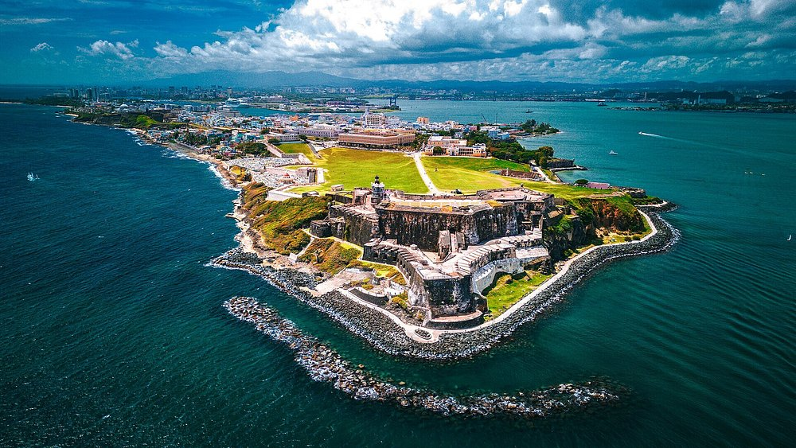

Historia
Colores del Viejo San Juan
Una colección visual sobre sus calles, plazas y arquitectura histórica.
Leer másTres proyectos inspirados en la riqueza de Puerto Rico.

Una colección visual sobre sus calles, plazas y arquitectura histórica.
Leer másUna guía visual ficticia para conocer la biodiversidad del bosque tropical.
Leer másHistorias breves sobre comunidades, tradiciones y gastronomía costera.
Leer más